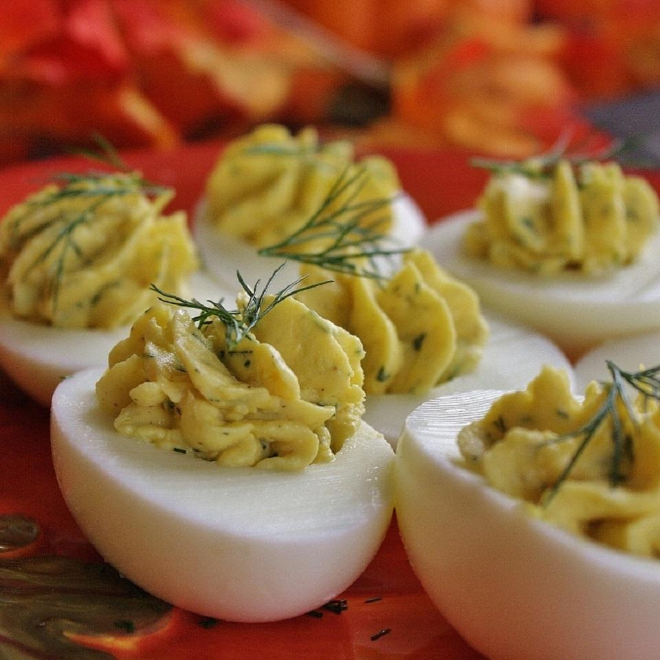

Classic Savory Deviled Eggs

Description
If you're serving immediately half the garlic powder because its very strong.
If serving the next day serve as is. When the egg mixture has time to sit,
the garlic flavor calms down a bit.
Love, love, love. Tangy, pretty and easy. It's fun to experiment with other
versions but this one is the one that reminds me of the version I grew up with,
it's pure comfort food and the MOST popular item on the potluck table.
Ingredients
- 6 hard-cooked eggs, halved
- ¼ cup mayonnaise
- 1 teaspoon rice wine vinegar
- ½ teaspoon chopped fresh dill (Optional)
- 1 teaspoon Dijon mustard
- ¼ teaspoon garlic powder
- ⅛ teaspoon salt
- 12 sprigs fresh dill (Optional)
Steps
- Scoop egg yolks into a bowl and set egg whites aside. Mash yolks, mayonnaise,
vinegar, 1/2 teaspoon chopped dill, Dijon mustard, garlic powder, and salt.
Spoon yolk mixture into egg whites. Garnish with dill sprigs. Refrigerate until ready to serve.